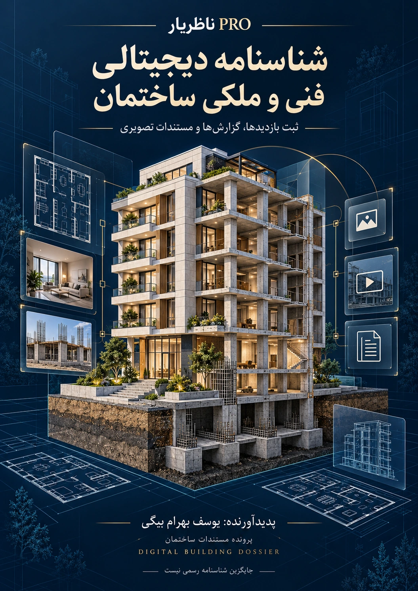
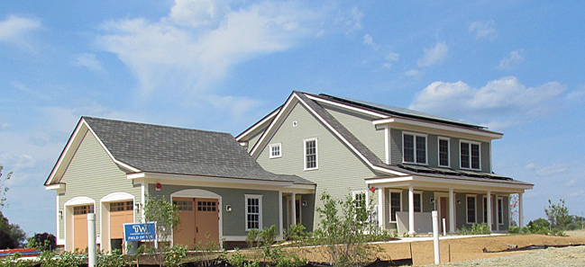
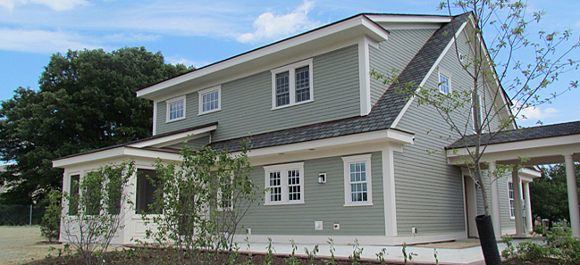
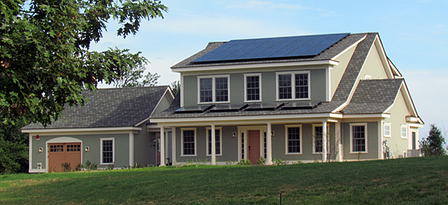

شناسنامه دیجیتالی
فنی و ملکی ساختمان
گزارشهای بازدید، یادداشتهای مهندس و شواهد تصویری ساختمان را در یک پرونده منظم ثبت و به ترتیب زمان مرور کنید.

مشاهده کاور در اندازه کامل ↗نظارت دقیق.
گزارش مستند.
فضای کار یکپارچه برای مهندس ناظر؛ از کنترل فونداسیون و آرماتوربندی تا ثبت شواهد و پیگیری اقدامات.
شروع ثبت بازدید ←گزارش دقیق، مبتنی بر شواهدنمای وضعیت مستندات
اولویتهای پرونده
تکمیل فرم به معنای تأیید فونداسیون نیست. هر نتیجه باید به مدرک معتبر یا مشاهده قابل ثبت متصل باشد.
نمونه مستند: خانه آزمایشی NIST
گزارش تکمیلشده با مشخصات عمومی، سه عکس واقعی و منابع رسمی. هیچ بازدید میدانی، آزمایش یا تأیید سازهای به تنظیمکننده نسبت داده نشده است.



منبع عکسها: NIST، مخزن رسمی usnistgov/netzero. تاریخ عکاسی در این بسته احراز نشده است. نام یوسف بهرام بیگی بهعنوان تنظیمکننده نمونه درج شده؛ این نمونه تأیید NIST یا گزارش ناظر آن پروژه نیست.
پرونده مستندات فنی و ملکی ساختمان
هر بازدید را جداگانه بایگانی کنید. گزارشهای هر کد ساختمان به ترتیب تاریخ و ساعت در یک PDF با فونت نازنین قرار میگیرند. اصل عکس و فیلم به PDF پیوست میشود؛ نمایش آنها به نرمافزار PDF بستگی دارد.
کد پرونده یا پلاک ثبتی و تاریخ و ساعت بازدید الزامیاند. برای ساختمانهای متفاوت، کد متفاوت ثبت کنید. پس از ثبت بازدید، برای بازدید بعدی «پرونده جدید» بسازید.
خروجی شامل بازدیدهای بایگانیشده همین ساختمان است؛ تغییرات جاری را پیش از خروجی دوباره بایگانی کنید. اصل فیلمها و عکسها داخل PDF قرار دارند. برای حفظ حافظه دستگاه، مجموع پیوستهای هر خروجی تا ۲۰۰ مگابایت است. این PDF متن را با ظاهر نازنین بهصورت تصویری ثبت میکند؛ متن آن قابل جستوجو نیست.